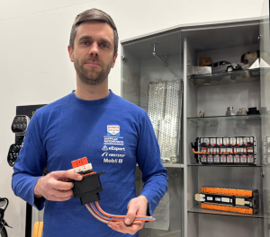

Traficom julkaisi joulukuussa tiedotteen, jossa se käytännössä estää varaosien tekemiseen 3D-tulostimella tai ylimääräisen suojan asentamisen auton pohjassa pilkistävälle akulle.
Näin on aiemmin toiminut muun muassa kokkolalainen korjaamoyrittäjä Jesse Haapala, joka julkaisee videoita toiminnastaan sosiaalisessa mediassa. Niitä seuraavat kymmenet tuhannet ihmiset.
Traficomin mukaan tulostettujen varaosien käyttäminen saattaa vaarantaa ajoneuvojen turvallisuuden ja muuttaa niiden alkuperäistä korkeajännitejärjestelmää.
Johtava asiantuntija Timo Ojala Traficomilta toteaa, että sähköautojen korjaaminen on vielä uutta eikä lainsäädäntökään ole täysin ajan tasalla.
Haapalalle vahvat ohjeet
Jesse Haapala kertoo pitäneensä Traficomin kanssa palaveria käyttämistään korjausmenetelmistä ennen kuin virasto julkaisi tiedotteen. Traficom antoi Haapalan korjaamolle ”vahvat ohjeet tulevaisuutta varten”. Hänelle ei kuitenkaan täysin selvinnyt, mitä saa tehdä.
Lisää: Jesse Haapala 3D-tulostaa Teslan osia, ja samaan on varaosapulan takia päätynyt moni muukin